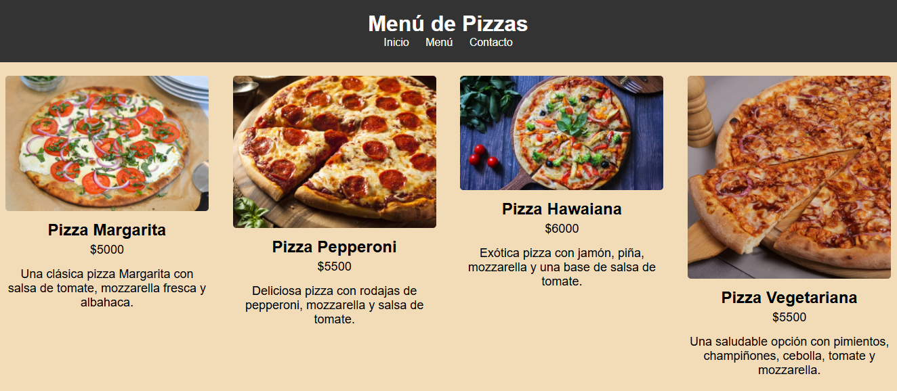
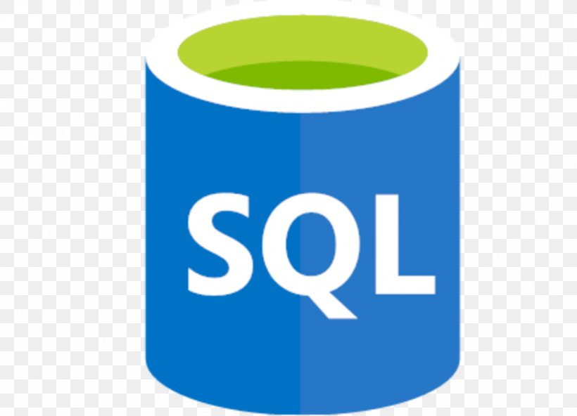
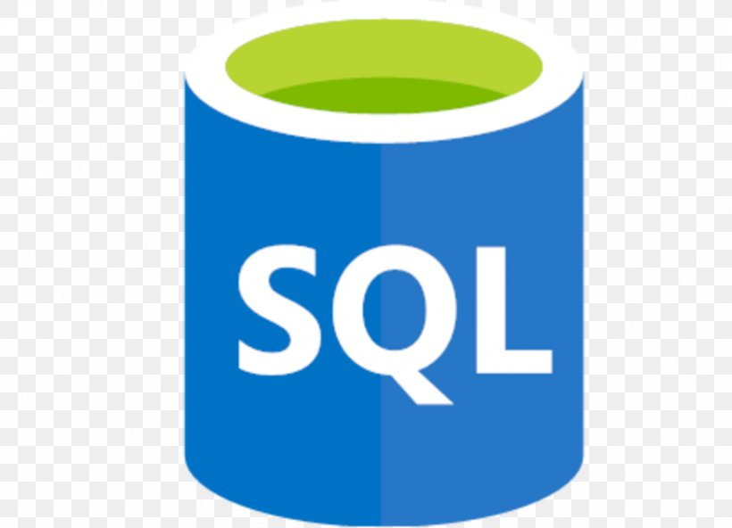

Vino Verse (un mundo por conocer)
Presentamos una aplicación web avanzada, diseñada para conectar personas interesadas en el mundo
del vino y el turismo. Esta plataforma multifuncional incluye características similares a las de
una red social, permitiendo interacciones entre usuarios, además de un sistema de comercio
electrónico que facilita la compra de productos relacionados con la enología y el turismo. La
aplicación incluye opciones para gestionar cuentas de usuario, interacciones sociales como
seguir o agregar amigos, crear grupos y mucho más. Además, se integra con la posibilidad de
hacer reservas en bodegas y contratar paquetes turísticos. Con un diseño moderno y optimizado,
la app ofrece una experiencia completa, accesible y fácil de usar, garantizando la interacción
entre los usuarios y el acceso a servicios relacionados con el vino y el turismo.

Copa America
Desarrollamos un portal dedicado exclusivamente a la Copa América,
ofreciendo una plataforma de última generación que cubre todos los aspectos del torneo. Con
noticias de última hora, análisis detallados de expertos, y resultados en tiempo real, la
experiencia se completa con gráficos interactivos y perfiles de equipos y jugadores. Estos
perfiles permiten comparar estadísticas de rendimiento de los futbolistas de manera visual y
accesible. El portal fue creado sobre una arquitectura sólida basada en Flask, garantizando una
experiencia fluida y optimizada para los usuarios, cumpliendo con su objetivo de ser una fuente
integral de información para los aficionados del fútbol.

Pizzería Donatello
Este pryecto Busca desarrollar una aplicación web
para gestionar pedidos en una pizzería,
mejorando la eficiencia operativa y la experiencia del cliente. Utilizando Flask como backend y
HTML/CSS para la interfaz, la aplicación permitirá registrar, visualizar y eliminar pedidos de
manera sencilla y eficiente

Dengue
Este proyecto busca desarrollar una aplicacion web para gestionar y
analizar datos
epidemiológicos relacionados con el dengue en Argentina, contribuyendo a su control y
prevención. Utilizando Flask como Backend, la aplicación permitirá registrar, visualizar y
actualizar información de pacientes, identificar áreas de riesgo, y generar reportes
estadísticos para mejorar la toma de desiciones en medidas de control y prevención de la
enfermedad

 
